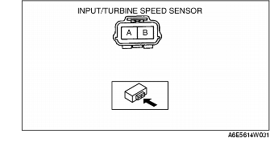

Input/turbine speed sensor inspection [FN4A-EL]
- • Water or foreign objects entering the connector can cause a poor connection or corrosion. Be sure not to drop water or foreign objects on the connector when disconnecting it.
1. Disconnect the negative battery cable.
2. Remove the battery, battery tray and battery tray bracket.
3. Disconnect the input/turbine speed sensor connector.

4. Measure resistance between the terminals of the input/turbine speed sensor.

Input/turbine speed sensor resistance
5. Connect the input/turbine speed sensor connector.
6. Install the battery tray bracket, battery tray and battery.
7. Connect the negative battery cable.